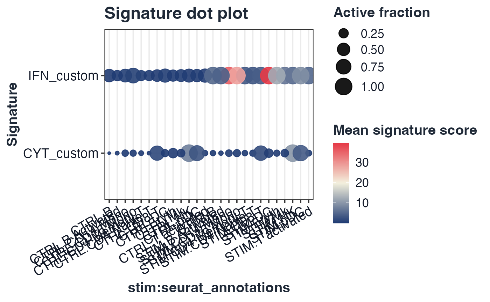

Custom named-list genesets
library(Seurat)
#> Loading required package: SeuratObject
#> Loading required package: sp
#>
#> Attaching package: 'SeuratObject'
#> The following object is masked from 'package:GLEAM':
#>
#> pbmc_small
#> The following objects are masked from 'package:base':
#>
#> intersect, t
custom_gs <- list(
IFN_custom = c("STAT1", "IRF1", "ISG15", "IFIT3"),
CYT_custom = c("NKG7", "PRF1", "GZMB", "GNLY")
)
ifnb_path <- system.file("extdata", "full_examples", "ifnb_seurat.rds", package = "GLEAM")
if (ifnb_path == "") ifnb_path <- file.path("inst", "extdata", "full_examples", "ifnb_seurat.rds")
seu <- readRDS(ifnb_path)
stratified_keep <- function(meta, n_target, strata_candidates = character()) {
if (nrow(meta) <= n_target) return(rownames(meta))
strata <- intersect(strata_candidates, colnames(meta))
all_ids <- rownames(meta)
if (length(strata) == 0L) return(all_ids[seq_len(n_target)])
key <- interaction(meta[, strata, drop = FALSE], drop = TRUE, lex.order = TRUE)
groups <- split(all_ids, key)
per_group <- max(1L, floor(n_target / max(1L, length(groups))))
keep <- unlist(lapply(groups, function(ids) head(sort(ids), per_group)), use.names = FALSE)
if (length(keep) < n_target) keep <- c(keep, head(setdiff(all_ids, keep), n_target - length(keep)))
unique(keep)[seq_len(min(n_target, length(unique(keep))))]
}
if (ncol(seu) > 5000) {
keep <- stratified_keep(seu@meta.data, 5000, c("orig.ident", "stim", "seurat_annotations", "seurat_clusters"))
seu <- subset(seu, cells = keep)
}
expr_ifnb <- tryCatch(
Seurat::GetAssayData(seu, assay = DefaultAssay(seu), layer = "counts"),
error = function(e) Seurat::GetAssayData(seu, assay = DefaultAssay(seu), slot = "counts")
)
meta_ifnb <- seu@meta.data
group_col <- if ("stim" %in% colnames(meta_ifnb)) "stim" else if ("group" %in% colnames(meta_ifnb)) "group" else "group"
celltype_col <- if ("seurat_annotations" %in% colnames(meta_ifnb)) "seurat_annotations" else if ("celltype" %in% colnames(meta_ifnb)) "celltype" else if ("seurat_clusters" %in% colnames(meta_ifnb)) "seurat_clusters" else "celltype"
if (!group_col %in% colnames(meta_ifnb)) meta_ifnb$group <- ifelse(seq_len(nrow(meta_ifnb)) <= nrow(meta_ifnb)/2, "A", "B")
if (!celltype_col %in% colnames(meta_ifnb)) meta_ifnb$celltype <- as.character(Idents(seu))
if (celltype_col == "seurat_clusters") meta_ifnb$celltype <- paste0("cluster_", meta_ifnb$seurat_clusters)
sc <- score_signature(
expr = expr_ifnb,
meta = meta_ifnb,
geneset = custom_gs,
geneset_source = "list",
seurat = FALSE,
method = "mean",
min_genes = 2,
verbose = FALSE
)
plot_dot(sc, by = c(group_col, celltype_col))